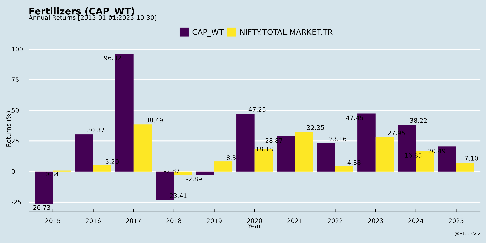
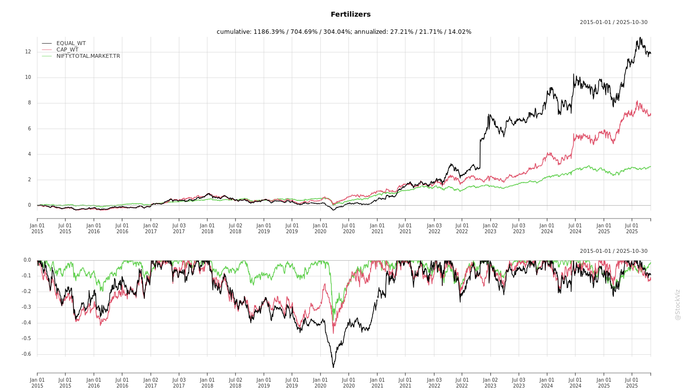
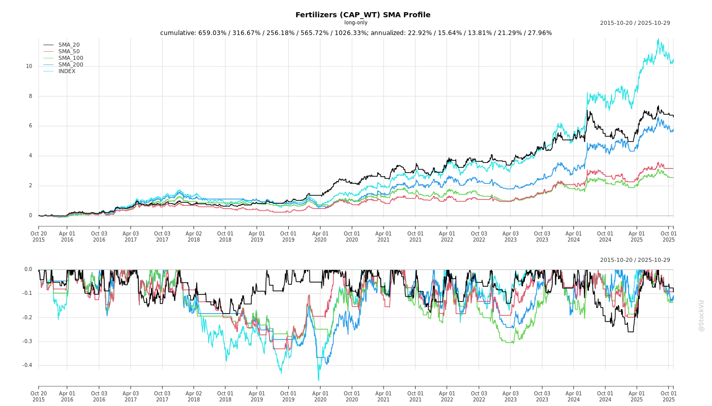
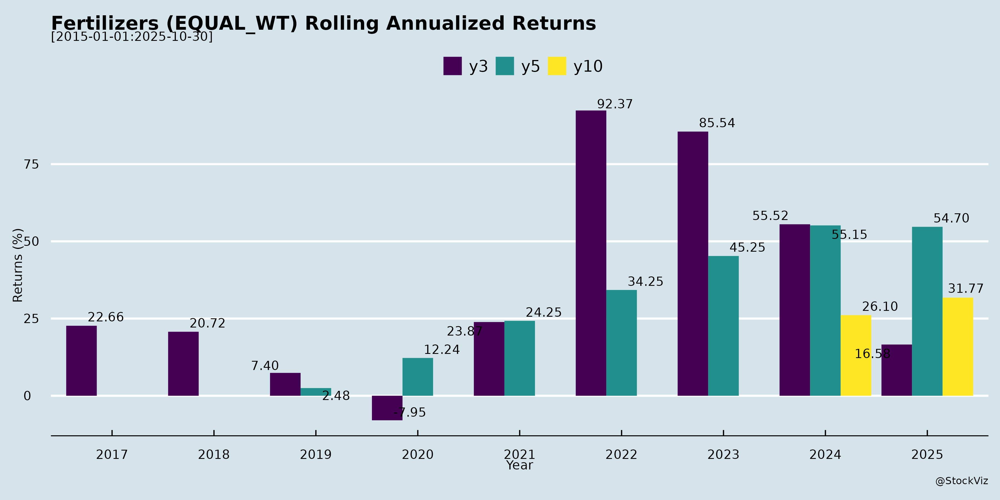

asof: 2025-12-03
Summary Analysis of Indian Fertilizers Sector
Based on the provided documents (primarily earnings transcripts from Chambal Fertilisers and GSFC, supplemented by disclosures from Coromandel, Paradeep Phosphates, and others), here’s a concise analysis of the Indian Fertilizers sector. The sector shows resilience amid policy support and seasonal demand, but faces volatility from raw materials (RM) and operations. Key insights are drawn from Q2/H1 FY26 performance (strong revenue/PAT growth) and forward guidance.
Tailwinds (Positive Factors)
Headwinds (Challenges)
Growth Prospects
Key Risks
Overall Sector Summary: Bullish on Rabi-driven H2 growth (volumes +10-20%) and diversification (crop protection/TAN as margin enhancers), supported by subsidies and capex. However, RM inflation and ops risks cap near-term margins (EBITDA ~15-20%). Long-term prospects strong (demand +2.5-3% CAGR, capacity gaps), but monitor policy/RM trajectories. Companies like Chambal/GSFC exemplify sector strength with debt-free status and strategic expansions.
asof: 2025-12-01
Overview:
The provided documents cover Q3 FY25 (ended Dec 2024) and 9M FY25 financial results from key players like FACT, Chambal Fertilisers, Paradeep Phosphates, RCF, GSFC, MBAPL, Krishana Phoschem, SPIC, Madras Fertilisers, Zuari Agro Chemicals, and Khaitan Chemicals. Fertilizer revenues dominate (80-95% of operations), heavily reliant on govt subsidies (NBS, urea retention prices, freight). Sector shows resilience with subsidy tailwinds but faces volatility from raw material/gas costs, plant issues, and policy delays. Overall, 9M revenues grew 5-15% YoY for most, but profits mixed (strong for Chambal/GSFC; losses for RCF/Madras). Debt levels high (e.g., RCF ₹3,515 Cr), with finance costs 5-10% of expenses.
Summary Table:
| Aspect | Key Metrics (Avg. Across Cos., 9M FY25) | Outlook |
|---|---|---|
| Tailwinds | Subsidy 40-60% rev; Q3 sales +25% YoY | Strong rabi demand |
| Headwinds | EBITDA margin 5-10%; Finance 5% exp | Cost inflation |
| Growth | Capex/schemes; 10-15% rev CAGR pot. | Policy-driven |
| Risks | Debt ₹200-3,500 Cr; Subsidy disputes | High (Policy/Opex) |
Sector resilient on subsidies but vulnerable to policy/gas risks. Positive for subsidy-heavy urea players; monitor debt deleveraging. (Data aggregated; individual variances noted.)
asof: 2025-12-03
Indian Fertilizer Sector Analysis: Headwinds, Tailwinds, Growth Prospects, and Key Risks
Based on the provided disclosures from key players (e.g., Coromandel, FACT, Chambal, Paradeep, RCF, GSFC, NFL, Madhya Bharat Agro, Krishana Phoschem, Zuari, Rama Phosphates), here’s a synthesized analysis of the Indian fertilizer sector as of late 2025. The sector shows resilience amid volatility, driven by government support and expansions, but faces input cost and operational challenges.
Tailwinds (Positive Factors)
Headwinds (Challenges)
Growth Prospects
Key Risks
| Risk Category | Details | Impacted Companies |
|---|---|---|
| Raw Material Volatility | Gas/Ammonia/P2O5 price swings; global supply chain issues. | GSFC, Rama, Paradeep |
| Operational/Mechanical | Plant breakdowns; capacity underutilization. | Paradeep |
| Regulatory/Tax | GST penalties, subsidy delays, SEBI compliance. | Chambal, All |
| Market/Competition | Chinese imports, spread compression, oversupply in Nylon chain. | GSFC, Rama |
| Execution | Capex delays (e.g., FACT GoI approval, Rama Dhule). | FACT, Rama, GSFC |
| Financial | High finance costs (Rama +33% YoY); debt for expansions. | Rama, GSFC |
| External | Monsoon variability, global tariffs/China slowdown. | Sector-wide |
Summary
The Indian fertilizer sector is buoyed by strong tailwinds like record profits, green ammonia security, and capex (e.g., FACT’s ₹6,350 Cr push), positioning it for 10-20%+ growth in FY26 via Rabi demand and expansions. However, headwinds from RM volatility (up 20-150%) and disruptions temper margins. Growth prospects are high-margin (14% EBITDA), but key risks center on execution, regulations, and inputs—mitigated by govt subsidies and diversification. Overall, bullish outlook with 15-25% PAT growth potential for leaders like GSFC/Rama, assuming stable subsidies and monsoon. Investors should monitor Q3 results and capex timelines.
asof: 2025-12-03
Indian Fertilizers Sector Analysis (Based on Q2/H1 FY26 Earnings Transcripts & Presentations)
The provided documents from key players (Chambal Fertilisers, GSFC, Khaitan Chemicals, etc.) highlight a resilient sector amid volatility. FY26 H1 shows robust revenue growth (e.g., Chambal +30% YoY standalone revenue, Khaitan +51% H1 revenue, GSFC +12% H1 revenue), driven by P&K volumes and timely subsidies. Urea remains stable but pressured. Below is a structured summary of headwinds, tailwinds, growth prospects, and key risks.
Headwinds (Challenges Pressuring Margins/Operations)
Tailwinds (Supportive Factors Boosting Performance)
Growth Prospects
| Company | H1 FY26 Highlights | FY26 Guidance |
|---|---|---|
| Chambal | Rev Rs.12,110cr (+30%), PAT Rs.1,240cr (+18%) | P&K momentum in Q3; TAN sales Q4; full TAN util. H2 FY27 |
| GSFC | Rev Rs.5,372cr (+12%), PAT Rs.463cr (+20%) | Fert vol. 10-11LMT; IP stable |
| Khaitan | Rev Rs.5,429cr (+51%), PAT Rs.429cr (from loss) | SSP-led growth; Rabi NBS supportive |
Key Risks
Overall Outlook: Positive for FY26. Tailwinds from subsidies/Rabi demand outweigh headwinds; expect 15-25% sector revenue growth led by P&K/SSP. Focus on diversification (speciality, industrial) de-risks urea reliance. Monitor RM prices and policy for Q3 earnings.
asof: 2025-11-30
Analysis of Indian Fertilizers Sector (Based on Q2/H1 FY26 Results from Coromandel, Paradeep Phosphates, GSFC, SPIC, and Khaitan Chemicals)
The provided documents highlight robust Q2/H1 FY26 performance across major Indian fertilizer players, driven by strong Kharif demand amid favorable monsoons. Companies reported revenue growth of 20-80% YoY, with PAT surges up to 135% in some cases. Key focus areas include phosphatics (NPK, DAP, SSP), expansions, and backward integration. Below is a structured analysis of headwinds, tailwinds, growth prospects, and key risks.
Tailwinds (Positive Factors Supporting Performance)
Headwinds (Challenges Impacting Margins)
Growth Prospects
Key Risks
Summary
The Indian fertilizers sector exhibits strong momentum in FY26, with tailwinds from monsoons, subsidies, and volumes driving 20-50%+ revenue/PAT growth across players. Companies are aggressively expanding capacities (₹3,600+ Cr investments) to capture phosphatics leadership and achieve 5+ MMT sales targets, bolstered by mergers and diversification into crop protection/retail. However, headwinds from raw material inflation (sulphuric/phosphoric/sulphur spikes) cap margin upside, while risks center on cost volatility, imports, and subsidy reliance. Overall Outlook: Positive for H2 FY26 (Rabi-driven), with growth prospects outweighing risks if global inputs stabilize—positioning the sector for sustained 15-30% CAGR, emphasizing backward integration and ESG for resilience. Investors should monitor Q3 subsidy flows and input prices.
Copyright © 2023 SAS Data Analytics Pvt. Ltd. All rights reserved.